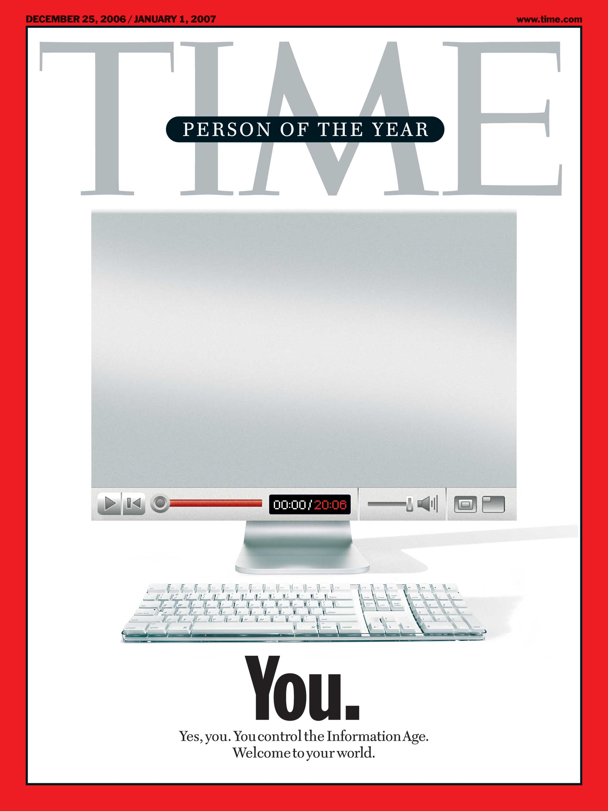

WEB 2.0 Revolution
Web 2.0 (also known as Participative (or Participatory) and Social Web) refers to websites that emphasize user-generated content, ease of use, participatory culture and interoperability (i.e., compatible with other products, systems, and devices) for end users.
The term was coined by Darcy DiNucci in 1999 and later popularized by Tim O'Reilly and Dale Dougherty at the first O'Reilly Media Web 2.0 Conference in late 2004. Although the term mimics the numbering of software versions, it does not denote a formal change in the nature of the World Wide Web, but merely describes a general change that occurred during this period as interactive websites proliferated and came to overshadow the older, more static websites of the original Web.
A Web 2.0 website allows users to interact and collaborate with each other through social media dialogue as creators of user-generated content in a virtual community. This contrasts the first generation of Web 1.0-era websites where people were limited to viewing content in a passive manner. Examples of Web 2.0 features include social networking sites or social media sites (e.g., Facebook), blogs, wikis, folksonomies ("tagging" keywords on websites and links), video sharing sites (e.g., YouTube), image sharing sites (e.g., Flickr), hosted services, Web applications ("apps"), collaborative consumption platforms, and mashup applications.
Whether Web 2.0 is substantially different from prior Web technologies has been challenged by World Wide Web inventor Tim Berners-Lee, who describes the term as jargon. His original vision of the Web was "a collaborative medium, a place where we could all meet and read and write." On the other hand, the term Semantic Web (sometimes referred to as Web 3.0) was coined by Berners-Lee to refer to a web of content where the meaning can be processed by machines.
The Web we know now, which loads into a browser window in essentially static screenfuls, is only an embryo of the Web to come. The first glimmerings of Web 2.0 are beginning to appear, and we are just starting to see how that embryo might develop. The Web will be understood not as screenfuls of text and graphics but as a transport mechanism, the ether through which interactivity happens. It will appear on your computer screen, on your TV set, your car dashboard, your cell phone, hand-held game machines, maybe even your microwave oven.
Writing when Palm Inc. introduced its first web-capable personal digital assistant (supporting Web access with WAP), DiNucci saw the Web "fragmenting" into a future that extended beyond the browser/PC combination it was identified with. She focused on how the basic information structure and hyper-linking mechanism introduced by HTTP would be used by a variety of devices and platforms. As such, her "2.0" designation refers to the next version of the Web that does not directly relate to the term's current use.
Although there were already networks that facilitated the distribution of files across the Internet, such as IRC, Hotline, and Usenet, Napster specialized in MP3 files of music and a user-friendly interface. At its peak the Napster service had about 80 million registered users. Napster made it relatively easy for music enthusiasts to download copies of songs that were otherwise difficult to obtain, such as older songs, unreleased recordings, studio recordings, and songs from concert bootleg recordings. Napster paved the way for streaming media services and transformed music into a public good for a brief period of time.

High-speed networks in college dormitories became overloaded, with as much as 61% of external network traffic consisting of MP3 file transfers. Many colleges blocked its use for this reason, even before concerns about liability for facilitating copyright violations on campus.
The term Web 2.0 did not resurface until 2002. Kinsley and Eric focus on the concepts currently associated with the term where, as Scott Dietzen puts it, "the Web becomes a universal, standards-based integration platform". In 2004, the term began to popularize when O'Reilly Media and MediaLive hosted the first Web 2.0 conference. In their opening remarks, John Battelle and Tim O'Reilly outlined their definition of the "Web as Platform", where software applications are built upon the Web as opposed to upon the desktop. The unique aspect of this migration, they argued, is that "customers are building your business for you". They argued that the activities of users generating content (in the form of ideas, text, videos, or pictures) could be "harnessed" to create value. O'Reilly and Battelle contrasted Web 2.0 with what they called "Web 1.0". They associated this term with the business models of Netscape and the Encyclopædia Britannica Online. For example,
Netscape framed "the web as platform" in terms of the old software paradigm: their flagship product was the web browser, a desktop application, and their strategy was to use their dominance in the browser market to establish a market for high-priced server products. Control over standards for displaying content and applications in the browser would, in theory, give Netscape the kind of market power enjoyed by Microsoft in the PC market. Much like the "horseless carriage" framed the automobile as an extension of the familiar, Netscape promoted a "webtop" to replace the desktop, and planned to populate that webtop with information updates and applets pushed to the webtop by information providers who would purchase Netscape servers.
The popularity of Web 2.0 was acknowledged by 2006 TIME magazine Person of The Year (You). That is, TIME selected the masses of users who were participating in content creation on social networks, blogs, wikis, and media sharing sites.
In the cover story, Lev Grossman explains:
It's a story about community and collaboration on a scale never seen before. It's about the cosmic compendium of knowledge Wikipedia and the million-channel people's network YouTube and the online metropolis MySpace. It's about the many wresting power from the few and helping one another for nothing and how that will not only change the world but also change the way the world changes.
It’s a moment to celebrate how far we’ve come, but also an opportunity to reflect on how far we have yet to go.
The fight for the web is one of the most important causes of our time. Today, half of the world is online. It is more urgent than ever to ensure that the other half is not left behind offline, and that everyone contributes to a web that drives equality, opportunity, and creativity.
The web is for everyone, and collectively we hold the power to change it. It won’t be easy. But if we dream a little and work a lot, we can get the web we want.